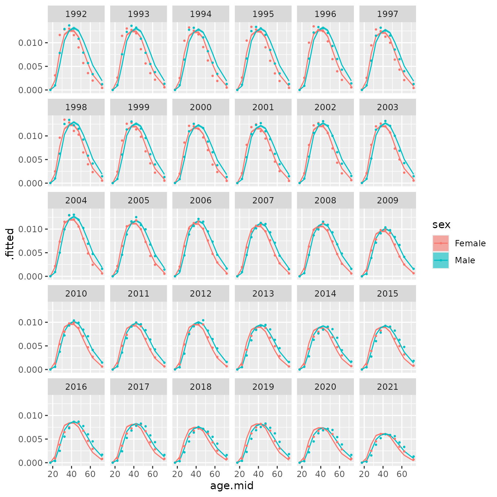

Divorces in New Zealand
vig1_nz.RmdIntroduction
In this vignette we use BayesRates to calculate age-specific rates and turn these age-specific rates into total divorce rates. We use administrative data on divorce in New Zealand in New Zealand. The counts of divorce and population in the dataset are large, so sampling errors are small.
Preliminaries
Packages
Besides BayesRates we load dplyr, for data manipulation, and ggplot for plotting.
library(BayesRates)
#> Error in get(paste0(generic, ".", class), envir = get_method_env()) :
#> object 'type_sum.accel' not found
library(dplyr)
#>
#> Attaching package: 'dplyr'
#> The following objects are masked from 'package:stats':
#>
#> filter, lag
#> The following objects are masked from 'package:base':
#>
#> intersect, setdiff, setequal, union
library(ggplot2)Data
The data on divorces is ins nz_divorces, a data frame
contained in the BayesRates package. `nz_divorces has
four columns:
-
age: a factor with levels"15-19","20-24",…,"60-64","65+";
-
sex: a character vector with values"Female"and"Male";
-
time: an integer vector with values1992,…,2021; and -
nevent: a numeric vector with the number of divorces.
nz_divorces
#> # A tibble: 660 × 4
#> age sex time nevent
#> <fct> <chr> <int> <dbl>
#> 1 15-19 Female 1992 12
#> 2 15-19 Female 1993 6
#> 3 15-19 Female 1994 9
#> 4 15-19 Female 1995 6
#> 5 15-19 Female 1996 3
#> 6 15-19 Female 1997 9
#> 7 15-19 Female 1998 3
#> 8 15-19 Female 1999 6
#> 9 15-19 Female 2000 9
#> 10 15-19 Female 2001 6
#> # ℹ 650 more rowsThe data on population is in nz_population, also
contained in the BayesRates package.
nz_population has with four columns:
-
age: a factor with levels"15-19","20-24",…,"60-64","65+";
-
sex: a character vector with values"Female","Male";
-
time: an integer vector with values being1992,…,2021; and -
py: a numeric vector with person-years of exposure.
nz_population
#> # A tibble: 660 × 4
#> age sex time py
#> <fct> <chr> <int> <dbl>
#> 1 15-19 Female 1992 139500
#> 2 15-19 Female 1993 135510
#> 3 15-19 Female 1994 133010
#> 4 15-19 Female 1995 131960
#> 5 15-19 Female 1996 132490
#> 6 15-19 Female 1997 132590
#> 7 15-19 Female 1998 133050
#> 8 15-19 Female 1999 133210
#> 9 15-19 Female 2000 134360
#> 10 15-19 Female 2001 136360
#> # ℹ 650 more rowsThe person-years of exposure, and hence the number of divorces, are both quite large.
Rates in a single period, both sexes combined
We start with the relatively simple where we are estimating age-specific rates in a single period, not distinguishing between females and males.
As a first step, we create two new datasets each only containing data for 2020.
nz_divorce_2020 <- nz_divorces |>
filter(time == 2020) |>
select(-time)
nz_popn_2020 <- nz_population |>
filter(time == 2020) |>
select(-time)We use the smooth_age() function to smooth the observed
across age.
res_age <- smooth_age(nevent_df = nz_divorce_2020,
py_df = nz_popn_2020,
age_width_df = nz_age_width_df,
age_min = 15)In the call to smooth_age(), the parameter
nevent_df specifies the data frame for numbers of events,
and the parameter py_df specifies the data frame for person
years of exposure. The parameters age_width_df and
age_min provide information about age groups.
nz_age_width_df is an existing data frame in the
BayesRates package that gives the width of each age
group.
head(nz_age_width_df)
#> # A tibble: 6 × 2
#> age width
#> <fct> <dbl>
#> 1 15-19 5
#> 2 20-24 5
#> 3 25-29 5
#> 4 30-34 5
#> 5 35-39 5
#> 6 40-44 5We have not told smooth_age() to calculate separate
rates for females and males, so, before fitting, it aggregates events
and person-years across the sexes.
A summary of the model specification can be obtained by printing the
return value from smooth_age().
res_age
#> --- Object of class "BayesRates_results" ---
#>
#> nevent ~ Poisson(rate * py)
#> log(rate) = age_effect
#> age_effect ~ Spline()
#>
#> agevar: age
#> byvar: <none>
#> n_draw: 1000The number of events is modeled by a Poisson distribution with mean
equal to an underlying rate multiplied by person-years of exposure. The
logarithm of the underlying rate equals the age effect, which is modeled
by a spline model. The model for the age effect is
Spline(). The value for agevar is
"age", indicating that variable with information on age
groups is called "age". The value of byvar is
empty, indicating that we fit a single model, within everyone belonging
to the same group. The value of ndraw is 1000, indicating
that the number of posterior draws is 1000, the default.
We use the components() function to extract model-based
estimates of rates disaggregated by age.
components(res_age, what = "rates")
#> # A tibble: 11 × 6
#> age age.mid .fitted .lower .upper .probability
#> <fct> <dbl> <dbl> <dbl> <dbl> <list>
#> 1 15-19 17.5 0.0000201 0.0000106 0.0000388 <dbl [1,000]>
#> 2 20-24 22.5 0.000495 0.000434 0.000564 <dbl [1,000]>
#> 3 25-29 27.5 0.00266 0.00253 0.00280 <dbl [1,000]>
#> 4 30-34 32.5 0.00523 0.00504 0.00542 <dbl [1,000]>
#> 5 35-39 37.5 0.00629 0.00610 0.00651 <dbl [1,000]>
#> 6 40-44 42.5 0.00702 0.00684 0.00722 <dbl [1,000]>
#> 7 45-49 47.5 0.00724 0.00702 0.00748 <dbl [1,000]>
#> 8 50-54 52.5 0.00638 0.00618 0.00658 <dbl [1,000]>
#> 9 55-59 57.5 0.00495 0.00475 0.00513 <dbl [1,000]>
#> 10 60-64 62.5 0.00326 0.00307 0.00346 <dbl [1,000]>
#> 11 65+ 72.5 0.00121 0.00114 0.00130 <dbl [1,000]>components() returns a data frame. In this data
frame,
-
age.midgives the middle point for each age group (which is helpful for plotting); -
.fittedgives a point estimate of the rate; -
.lowerand.uppergive lower and upper bounds of the credible interval of the rate (a 95% credible interval by default); and -
.probabilitygives a list containing the posterior draws of the rate.
components() can also be used to extract model-based
estimates of age effects:
components(res_age, what = "age_effect")
#> # A tibble: 11 × 6
#> age age.mid .fitted .lower .upper .probability
#> <fct> <dbl> <dbl> <dbl> <dbl> <list>
#> 1 15-19 17.5 -4.69 -5.27 -4.10 <dbl [1,000]>
#> 2 20-24 22.5 -1.49 -1.60 -1.37 <dbl [1,000]>
#> 3 25-29 27.5 0.195 0.109 0.275 <dbl [1,000]>
#> 4 30-34 32.5 0.871 0.799 0.942 <dbl [1,000]>
#> 5 35-39 37.5 1.06 0.988 1.13 <dbl [1,000]>
#> 6 40-44 42.5 1.16 1.10 1.24 <dbl [1,000]>
#> 7 45-49 47.5 1.20 1.13 1.27 <dbl [1,000]>
#> 8 50-54 52.5 1.07 1.00 1.14 <dbl [1,000]>
#> 9 55-59 57.5 0.816 0.743 0.886 <dbl [1,000]>
#> 10 60-64 62.5 0.400 0.313 0.489 <dbl [1,000]>
#> 11 65+ 72.5 -0.587 -0.677 -0.502 <dbl [1,000]>Function augment() returns the original data plus
model-based estimates of rates.
rates_age_df <- augment(res_age)
rates_age_df
#> # A tibble: 22 × 10
#> age sex nevent py age.mid .fitted .lower .upper .probability
#> <fct> <chr> <dbl> <dbl> <dbl> <dbl> <dbl> <dbl> <list>
#> 1 15-19 Female 0 154480 17.5 0.0000201 0.0000106 0.0000388 <dbl>
#> 2 15-19 Male 0 162910 17.5 0.0000201 0.0000106 0.0000388 <dbl>
#> 3 20-24 Female 111 163370 22.5 0.000495 0.000434 0.000564 <dbl>
#> 4 20-24 Male 54 175600 22.5 0.000495 0.000434 0.000564 <dbl>
#> 5 25-29 Female 639 187000 27.5 0.00266 0.00253 0.00280 <dbl>
#> 6 25-29 Male 429 195310 27.5 0.00266 0.00253 0.00280 <dbl>
#> 7 30-34 Female 1026 187220 32.5 0.00523 0.00504 0.00542 <dbl>
#> 8 30-34 Male 837 186170 32.5 0.00523 0.00504 0.00542 <dbl>
#> 9 35-39 Female 1134 168560 37.5 0.00629 0.00610 0.00651 <dbl>
#> 10 35-39 Male 1032 165880 37.5 0.00629 0.00610 0.00651 <dbl>
#> # ℹ 12 more rows
#> # ℹ 1 more variable: .observed <dbl>Since the model does not distinguish sexes, the values of ‘.fitted’, ‘.lower’, ‘.upper’ and ‘.probability’ are the same for females and males at the each age.
We plot the model-based estimates of rates (including point estimates and credible intervals) and the observed rates (in blue), separately for each sex.
ggplot(rates_age_df,
aes(x = age.mid, ymin = .lower, y = .fitted, ymax = .upper)) +
facet_wrap(vars(sex)) +
geom_ribbon(fill = "salmon") +
geom_line() +
geom_point(aes(y = .observed), col = "blue")Function total_rate() sums across ages to give total
rates.
total_rate(res_age)
#> # A tibble: 1 × 5
#> .fitted .lower .upper .probability .observed
#> <dbl> <dbl> <dbl> <list> <dbl>
#> 1 0.236 0.232 0.239 <dbl [1,000]> 0.236Rates in a single period, separating sexes
We next fit a separate model for each sex. To do this, we set the
argument byvar in smooth_age() to
"sex".
res_age_bysex <- smooth_age(nevent_df = nz_divorce_2020,
py_df = nz_popn_2020,
age_width_df = nz_age_width_df,
age_min = 15,
byvar = "sex")
res_age_bysex
#> --- Object of class "BayesRates_results" ---
#>
#> nevent ~ Poisson(rate * py)
#> log(rate) = age_effect
#> age_effect ~ Spline()
#>
#> agevar: age
#> byvar: sex
#> n_draw: 1000The rates returned by augment() now distinguish between
sexes
rates_age_bysex_df <- augment(res_age_bysex)
rates_age_bysex_df
#> # A tibble: 22 × 10
#> age sex nevent py age.mid .fitted .lower .upper .probability
#> <fct> <chr> <dbl> <dbl> <dbl> <dbl> <dbl> <dbl> <list>
#> 1 15-19 Female 0 154480 17.5 0.0000364 0.0000189 0.0000682 <dbl>
#> 2 15-19 Male 0 162910 17.5 0.0000220 0.0000111 0.0000413 <dbl>
#> 3 20-24 Female 111 163370 22.5 0.000674 0.000568 0.000787 <dbl>
#> 4 20-24 Male 54 175600 22.5 0.000326 0.000266 0.000409 <dbl>
#> 5 25-29 Female 639 187000 27.5 0.00322 0.00301 0.00345 <dbl>
#> 6 25-29 Male 429 195310 27.5 0.00204 0.00189 0.00221 <dbl>
#> 7 30-34 Female 1026 187220 32.5 0.00578 0.00553 0.00607 <dbl>
#> 8 30-34 Male 837 186170 32.5 0.00472 0.00449 0.00496 <dbl>
#> 9 35-39 Female 1134 168560 37.5 0.00653 0.00622 0.00684 <dbl>
#> 10 35-39 Male 1032 165880 37.5 0.00609 0.00578 0.00640 <dbl>
#> # ℹ 12 more rows
#> # ℹ 1 more variable: .observed <dbl>Graphing the results shows that the model now recognizes the female-male differences in age patterns.
ggplot(rates_age_bysex_df,
aes(x = age.mid, ymin = .lower, y = .fitted, ymax = .upper)) +
facet_wrap(vars(sex)) +
geom_ribbon(fill = "salmon") +
geom_line() +
geom_point(aes(y = .observed), col = "blue")
Function total_rate() now produces separate results for
females and males.
total_rate(res_age_bysex)
#> # A tibble: 2 × 6
#> sex .fitted .lower .upper .probability .observed
#> <chr> <dbl> <dbl> <dbl> <list> <dbl>
#> 1 Female 0.231 0.227 0.237 <dbl [1,000]> 0.232
#> 2 Male 0.242 0.237 0.248 <dbl [1,000]> 0.242Alternative specifications of age effect
The spec_age argument to smooth_age()
specifies the prior model to be applied to age effects. The default
value for spec_age is Spline(). In this
section we experiment with alternative values.
Modifying the spline model for age effects
When spec_age is set to Spline(), age
effects are modelled using a penalised spline, with degrees of freedom
equal to max(ceiling(0.7 * n), 4), where n is
the number of age groups. In our data, n equals 11, so the
degrees of freedom is 8.
Reducing the degrees of freedom used within Spline() may
lead smoother age effects. Here we set the degrees of freedom to
5, and graph the results.
res_age_bysex_5df <- smooth_age(nevent_df = nz_divorce_2020,
py_df = nz_popn_2020,
age_width_df = nz_age_width_df,
age_min = 15,
byvar = "sex",
spec_age = Spline(df = 5))
rates_age_bysex_5df <- augment(res_age_bysex_5df)
ggplot(rates_age_bysex_5df,
aes(x = age.mid, ymin = .lower, y = .fitted, ymax = .upper)) +
facet_wrap(vars(sex)) +
geom_ribbon(fill = "salmon") +
geom_line() +
geom_point(aes(y = .observed), col = "blue")The lower degrees of freedom does indeed increase the smoothing, and the modelled estimates are further away from the direct estimates.
Second-order random walk model for age
We can also use a second order random walk model to smooth the observed rates across age for each sex.
res_age_bysex_rw <- smooth_age(nevent_df = nz_divorce_2020,
py_df = nz_popn_2020,
age_width_df = nz_age_width_df,
age_min = 15,
byvar = "sex",
spec_age = RW2())
rates_age_bysex_rw <- augment(res_age_bysex_rw)
ggplot(rates_age_bysex_rw,
aes(x = age.mid, ymin = .lower, y = .fitted, ymax = .upper)) +
facet_wrap(vars(sex)) +
geom_ribbon(fill = "salmon") +
geom_line() +
geom_point(aes(y = .observed), col = "blue")Smoothing over age and time
We now return to the full dataset, and apply function
smooth_agetime(), which simultaneously smooths over age and
time.
Fixed age pattern
In our first model, we asssume that age-patterns are constant over
time. We set the parameter spec_time to
TimeFixed().
res_agetime_fix <- smooth_agetime(nevent_df = nz_divorces,
py_df = nz_population,
age_width_df = nz_age_width_df,
age_min = 15,
byvar = "sex",
spec_time = TimeFixed())
res_agetime_fix
#> --- Object of class "BayesRates_results" ---
#>
#> nevent ~ Poisson(rate * py)
#> log(rate) = age_effect + time_effect
#> age_effect ~ Spline()
#> time_effect ~ TimeFixed()
#>
#> agevar: age
#> timevar: time
#> byvar: sex
#> n_draw: 1000The model outputs now have a time dimension.
rates_agetime_fix <- augment(res_agetime_fix)
rates_agetime_fix
#> # A tibble: 660 × 11
#> age sex time nevent py age.mid .fitted .lower .upper .probability
#> <fct> <chr> <int> <dbl> <dbl> <dbl> <dbl> <dbl> <dbl> <list>
#> 1 15-19 Female 1992 12 139500 17.5 3.56e-5 3.03e-5 4.21e-5 <dbl>
#> 2 15-19 Female 1993 6 135510 17.5 3.53e-5 3.02e-5 4.15e-5 <dbl>
#> 3 15-19 Female 1994 9 133010 17.5 3.47e-5 2.97e-5 4.08e-5 <dbl>
#> 4 15-19 Female 1995 6 131960 17.5 3.52e-5 3.01e-5 4.13e-5 <dbl>
#> 5 15-19 Female 1996 3 132490 17.5 3.59e-5 3.06e-5 4.20e-5 <dbl>
#> 6 15-19 Female 1997 9 132590 17.5 3.43e-5 2.95e-5 4.04e-5 <dbl>
#> 7 15-19 Female 1998 3 133050 17.5 3.50e-5 2.98e-5 4.11e-5 <dbl>
#> 8 15-19 Female 1999 6 133210 17.5 3.41e-5 2.91e-5 4.00e-5 <dbl>
#> 9 15-19 Female 2000 9 134360 17.5 3.31e-5 2.82e-5 3.88e-5 <dbl>
#> 10 15-19 Female 2001 6 136360 17.5 3.28e-5 2.82e-5 3.88e-5 <dbl>
#> # ℹ 650 more rows
#> # ℹ 1 more variable: .observed <dbl>When we graph the results for the period 1992–2021, we see systematic differences between the modelled and direct estimates.
ggplot(rates_agetime_fix, aes(x = age.mid)) +
facet_wrap(vars(time)) +
geom_ribbon(aes(ymin = .lower, ymax = .upper, fill = sex),
alpha = 0.6) +
geom_line(aes(y = .fitted, color = sex)) +
geom_point(aes(y = .observed, color = sex),
size = 0.5)
These results suggest that we may need to allow the age-pattern to vary over time.
Time-varying age pattern
To allow the age-pattern to vary over time, we set
spec_time to TimeVarying(), which is in fact
the default. In the TimeVarying() model, each age group
follows a different random walk, with the random walks for neighbouring
age groups being more highly correlated than random walks for distant
age groups.
res_agetime_vary <- smooth_agetime(nevent_df = nz_divorces,
py_df = nz_population,
age_width_df = nz_age_width_df,
age_min = 15,
byvar = "sex")
res_agetime_vary
#> --- Object of class "BayesRates_results" ---
#>
#> nevent ~ Poisson(rate * py)
#> log(rate) = age_effect + time_effect
#> age_effect ~ Spline()
#> time_effect ~ TimeVarying()
#>
#> agevar: age
#> timevar: time
#> byvar: sex
#> n_draw: 1000In this revised model, the systematic differences between modelled and direct estimates disappear.
rates_agetime_vary <- augment(res_agetime_vary)
ggplot(rates_agetime_vary, aes(x = age.mid)) +
facet_wrap(vars(time)) +
geom_ribbon(aes(ymin = .lower, ymax = .upper, fill = sex),
alpha = 0.6) +
geom_line(aes(y = .fitted, color = sex)) +
geom_point(aes(y = .observed, color = sex),
size = 0.5)Using the components() function, we can extract the age
and age-time effects.
The age effect is an average age pattern over the whole period.
age_effect <- components(res_agetime_vary, what = "age_effect")
ggplot(age_effect,
aes(x = age.mid, ymin = .lower, y = .fitted, ymax = .upper)) +
facet_wrap(vars(sex)) +
geom_ribbon(fill = "salmon") +
geom_line()The age-time effect shows departures from the average effect in each period
time_effect <- components(res_agetime_vary, what = "time_effect")
ggplot(time_effect, aes(x = age.mid)) +
facet_wrap(vars(time)) +
geom_ribbon(aes(ymin = .lower, ymax = .upper, fill = sex),
alpha = 0.6) +
geom_line(aes(y = .fitted, color = sex))The age-time effects rotate in an anti-clockwise direction. This implies that the overall shellage-pattern is become more skewed towards older ages over time.
Finally, we calculate time-varying total rates.
total_varying <- total_rate(res_agetime_vary)
ggplot(total_varying,
aes(x = time, y = .fitted, ymin = .lower, ymax = .upper)) +
facet_wrap(vars(sex)) +
geom_ribbon(fill = "salmon") +
geom_line() +
geom_point(aes(y = .observed), col = "blue")